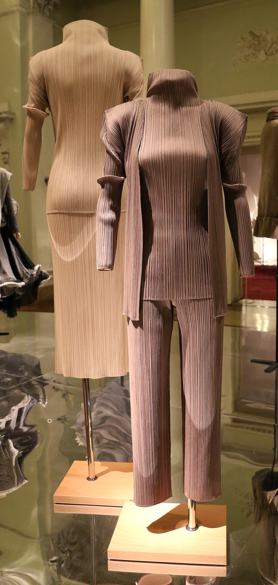
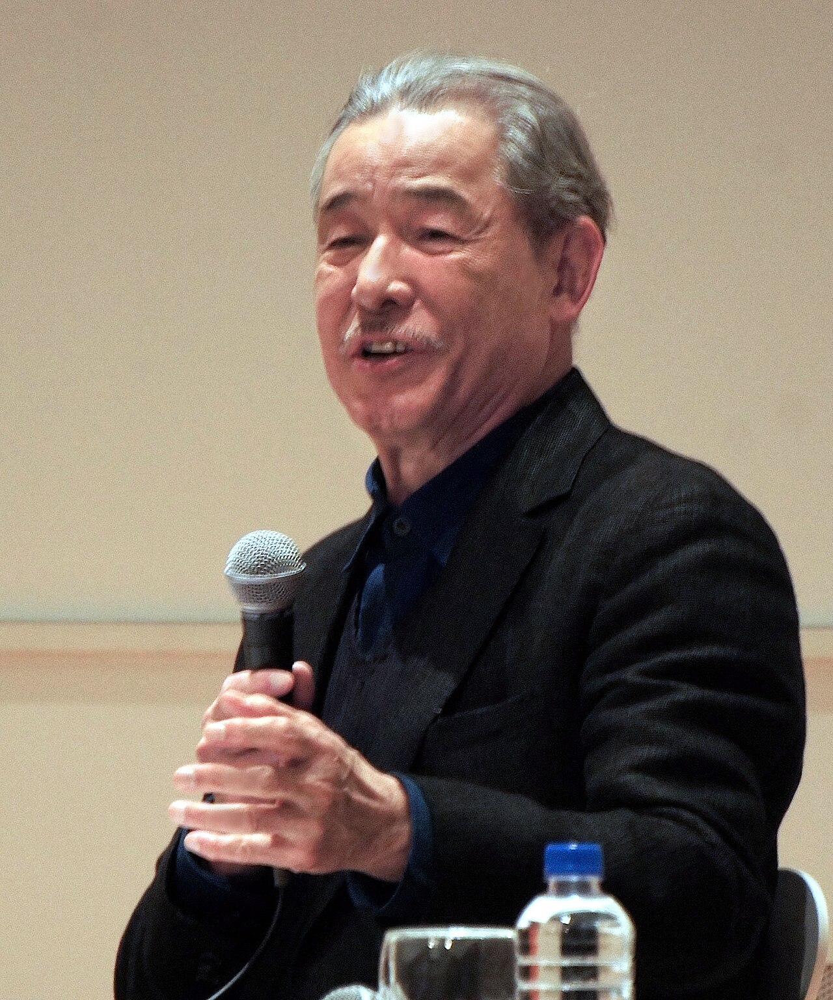
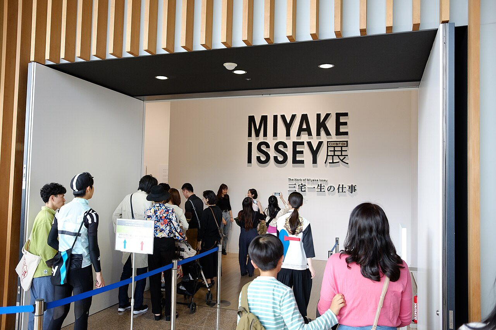

Lesson 02 / 17 min / Fashion
A Piece of Cloth
Issey Miyake (1938–2022) · 三宅一生

The three-minute version
Issey Miyake was born in Hiroshima on 22 April 1938. He was seven when the atomic bomb was dropped; he survived, his mother did not. He rarely spoke about it in public, but when he did, he connected it to a decision that runs through everything he made: clothing should be for life, for many people, not for a narrow idea of couture.
He studied graphic design at Tama Art University in Tokyo, graduated in 1964, and went to Paris in 1965. He worked behind the scenes at Guy Laroche and Givenchy, witnessed the May 1968 protests, and moved to New York in 1966 to work in ready-to-wear. He returned to Tokyo in 1969 and founded Miyake Design Studio in 1970. His first Paris collection followed in 1973.
The 1970s and 1980s were a long research programme into cloth: new synthetics, traditional Japanese dyeing, the body’s movement, the space between the garment and the skin. In 1988 he began the experiments that became Pleats Please (1993): the garment is cut and sewn first, oversized, then sandwiched between paper and heat-pressed into permanent pleats. In 1998 he began A-POC with Dai Fujiwara — a computer-programmed knitting machine turns a single thread into a tube of cloth, and the wearer cuts it into garments. He co-founded the design museum 21_21 DESIGN SIGHT in 2007 and died in Tokyo on 5 August 2022.
Dates and process: Miyake Design Studio, “The Concepts and Work of Issey Miyake”; Britannica.
“A piece of cloth”
Miyake’s basic unit is not the garment. It is the cloth. He starts with a single thread, asks what that thread can become, and only then asks what shape it should take on a body. This is why his clothes often look simple and behave strangely: the design is happening at the level of the fibre, the pleat, the knit — not the lapel or the waistline.
The phrase he used was “a piece of cloth” (ichi mai no nuno). It sounds modest. It is actually a rejection of the whole couture model, which begins with a sketch and cuts the cloth to fit it. Miyake begins with the material and lets the body follow.
“Design is not for philosophy — it’s for life.” Issey Miyake, International Herald Tribune, 23 March 1992
That sentence is easy to underestimate. It does not mean “no ideas”. It means the idea has to survive contact with a washing machine, a dancer, a hot train, a suitcase. Pleats Please is machine-washable, packable, and unbothered by humidity. The philosophy is in the care label.

Three works to know
1. Pleats Please (1993–)
The garment is cut and sewn oversized, then pleated between layers of paper in a heat press. The fabric shrinks into the final size and holds the pleat permanently. The result is flexible, machine-washable, and almost impossible to crease. The line became Miyake’s most recognisable look — and the clearest example of his method: construction first, shape second.
2. A-POC (1998–99)
“A Piece of Cloth.” A single thread is fed into an industrial knitting or weaving machine programmed by a computer; the machine produces a tube of fabric with the garment’s pattern built in. The wearer cuts along the lines to make a shirt, a dress, trousers. Miyake refused to put his name on it: the point was the system, not the signature. MoMA has an early A-POC piece in its permanent collection.
3. L’Eau d’Issey (1992)
A fragrance, not a garment — but the same logic. Water, lightness, a clean translucent bottle. It became an international bestseller and helped normalise “oceanic” perfumes. It is also a reminder that Miyake’s design practice was never confined to clothing.


Look closely
- Pinch a pleat. Let it go. The “memory” of the fibre is the design; the shape is not pressed in, it is trained in.
- Find the seam that isn’t there. A-POC moves the making to the machine; the wearer becomes the cutter. Ask who finished the garment.
- Watch it move. A Miyake garment is designed for motion. The still mannequin is the least interesting view.
Watch
Where to see Miyake in person
- 21_21 DESIGN SIGHT, Tokyo — the design museum Miyake co-founded and directed; the building is by Tadao Ando, and the exhibitions often carry his “piece of cloth” logic.
- Issey Miyake Aoyama / Ginza — the flagship stores; ask to handle a Pleats Please piece, not just look at it.
- National Art Center, Tokyo — the 2016 retrospective was here; check the current programme.
- V&A, London / The Met, New York — the deepest historical collections of Miyake’s garments outside Japan.
- Kyoto Costume Institute — the research archive; check access and exhibitions.
Miyake died in 2022; the house continues under his team. The shops are the most reliable place to see the work in the hand, not behind glass.
Check yourself
0 of 0 correct so far1. What happens first in Miyake’s garment pleating?
2. What does A-POC ask the wearer to do?
3. Which city was Miyake born in?
Primary source
Read the official “Concepts and Work” chronology, then the Met’s essay “Miyake, Kawakubo, and Yamamoto: Japanese Fashion in the Twentieth Century.” If you want the full visual argument, find the 2016 catalogue The Work of Miyake Issey.
One thing to remember: Miyake’s unit of design is not the garment; it is the cloth.